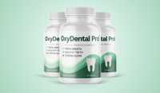

Oxydental Scam or Legit? The Shocking Truth Exposed (2026 Review)

Click Here to Check Official Batch Availability →| Product Name: | Oxydental |
| Editorial Score: | 4.8 / 5.0 ⭐⭐⭐⭐⭐ |
| Primary Purpose: | Targeted Bioactive Health & Vitality Formula (Natural Health & Dietary Supplement) |
| Manufacturing / Delivery: | c-GMP Certified, FDA-Registered Facility (USA) |
| Guarantee Shield: | 100% Risk-Free Money-Back Guarantee |
| Availability: | Official Manufacturer Site Only |
OxyDental Pro Reviews (2026) Is It Worth It Or Scam?
OxyDental Pro is a natural formula that supports strong teeth, healthy gums, and fresh breath by targeting harmful bacteria and improving oral health naturally.
OxyDental Pro | Quick Overview | |
Product Name | OxyDental Pro |
Formula Type | Natural Oral Health Supplement (Minerals + Herbal Blend) |
Purpose | Supports strong teeth, healthy gums, and fresh breath |
Key Benefits | Helps reduce bad breath, supports gum health, strengthens enamel, improves oral hygiene, promotes full-mouth health |
Usage | Take 1 tablet daily, allow it to dissolve slowly in the mouth for the best results |
Side Effects | No major side effects reported when used as directed |
Price | 2 Bottles: $158 (+ shipping) • 3 Bottles: $207 (most popular) • 6 Bottles: $294 (best value) |
Money-Back Guarantee | 60-day 100% money-back guarantee |
Availability | Available only through the official online website |
Official Website | |
With years of experience in clinical nutrition, health coaching, and medical writing, Dr. Cassy has dedicated her career to helping customers achieve their health goals through evidence-based approaches.
In this review, she dives deep into OxyDental Pro’s formula, benefits, and real-world effectiveness to determine whether it’s truly worth your investment. Let’s get started!🚀
What is OxyDental Pro?
OxyDental Pro is a natural oral health supplement formulated to support strong teeth, healthy gums, and long-lasting fresh breath.
This formula works from within to help maintain a healthier environment in your mouth. Its focus on addressing the neurological root of many common oral issues, such as harmful bacteria and poor oxygen flow in the gums.
By helping to restore balance, OxyDental Pro may assist in reducing bad breath, supporting gum strength, and maintaining cleaner teeth over time.
The formula combines a blend of minerals, plant extracts, and natural active components that work together to promote full-mouth health.
The Science Behind OxyDental Pro
OxyDental Pro is formulated around the idea that optimal oral health begins with balance inside the mouth.
Its blend of natural active components works to support cleaner gums, fresher breath, and improved overall oral hygiene by creating an environment where beneficial processes can thrive while harmful elements are reduced.
At its core, the formula focuses on targeting the buildup of harmful bacteria that often disrupt the natural ecosystem of the mouth. This buildup can interfere with oxygen flow to the gums and teeth, which plays an important role in maintaining healthy tissue.
By helping to clear these unwanted elements, OxyDental Pro supports better oxygenation, an essential factor for gum strength and oral freshness.
Additionally, the nutrients and plant-based active components in the formula are selected to support the natural repair and maintenance processes of dental tissue.
Over time, this may contribute to stronger teeth, healthier gums, and a more resilient oral environment, making it a supportive addition to a consistent dental care routine.
OxyDental Pro Ingredients
OxyDental Pro is made with a carefully selected blend of essential minerals and a proprietary herbal complex formulated to support overall oral health.
Each ingredient plays a specific role in promoting stronger teeth, healthier gums, and fresher breath. Together, they work synergistically to maintain a balanced oral environment.
Calcium (as Dicalcium Phosphate)
Calcium helps support strong teeth and bone structure in the jaw. It plays a key role in maintaining enamel density and durability. Regular intake supports long-term dental strength and resilience.
Iodine (as Potassium Iodide)
Iodine supports healthy metabolic and immune functions within the body. It also contributes to maintaining balanced oral microbial activity. This helps create a healthier environment in the mouth.
Copper (from Sodium Copper Chlorophyllin)
Copper has natural antimicrobial properties that support oral cleanliness. It helps lessen unwanted bacteria that can affect breath and gum health. It also contributes to fresh breath support.
Chromium (as Chromium Chloride)
Chromium helps support overall mineral balance in the body. It plays a role in maintaining healthy metabolic processes. This indirectly supports oral and gum health stability.
Proprietary Dental Health Blend (120mg)
- Chlorella – Chlorella is a nutrient-rich green algae known for its detoxifying properties. It helps support the body’s natural cleansing process and may promote a healthier oral environment.
- Chlorophyllin – Chlorophyllin is a plant-based compound that helps neutralize odors and support fresh breath. It also contributes to reducing harmful bacteria in the mouth.
- Boron Citrate – Boron citrate plays a role in maintaining strong bones and teeth by supporting mineral balance. It may also help support gum health and overall oral stability.
- Shilajit Extract – Shilajit extract is rich in fulvic acid and trace minerals that support tissue repair and vitality. It may help promote stronger gums and improved oral resilience over time.
Benefits
- Supports Stronger Teeth – OxyDental Pro provides essential minerals that help maintain enamel strength. This can contribute to more durable teeth over time.
- Promotes Healthy Gums – The formula works to nourish gum tissue and support firmness. It may also help reduce irritation and improve overall gum condition.
- Helps Eliminate Bad Breath – By targeting odor-causing bacteria, it helps keep your breath fresh. This leads to greater confidence in daily interactions.
- Encourages Better Oral Hygiene – It supports a balanced environment in the mouth alongside brushing and flossing. This helps maintain overall cleanliness and oral health.
- Improves Oral Comfort – Regular use may help reduce sensitivity and discomfort in teeth and gums. This makes everyday activities like eating and drinking more comfortable.
- Enhances Overall Mouth Health – The combined ingredients work together to support full-mouth wellness. This includes teeth, gums, and breath in one simple routine.
Pros
- Supports strong teeth and enamel health
- Promotes healthier, firmer gums
- Helps reduce bad breath naturally
- Contains natural, non-GMO ingredients
- Easy-to-use daily supplement
- Targets the root causes of oral issues
- Includes essential minerals and herbal blend
- No stimulants or harsh chemicals
- Comes with a 60-day money-back guarantee
- Suitable for long-term oral care support
Cons
- Results may vary from person to person
- Only available online (not in local stores)
- Requires consistent use for best results
How To Use?
Take 1 tablet daily as part of your oral health routine.
Step 1: Place one tablet in your mouth and let it dissolve slowly. This allows the active active components to begin working directly in your oral environment.
Step 2: Use it consistently every day for best results. Regular use helps support long-term gum health, fresher breath, and stronger teeth over time.
Are There Any Side Effects?
No side effects reported, OxyDental Pro is generally considered safe for daily use due to its natural and carefully selected active components.
The supplement is free from stimulants and harsh chemicals, making it suitable for long-term use. Its gentle composition supports oral health without disrupting the body’s natural balance.
However, customers with existing medical conditions or those taking medications should consult a healthcare professional before use. Overall, it offers a safe and supportive approach to improving oral hygiene naturally.
Is OxyDental Pro a Scam or Legit?
Yes — OxyDental Pro legitimate oral health supplement.
It is sold as a commercial product through official online sales pages with clear pricing, ingredient listings, and usage instructions. The product also offers a 60-day money-back guarantee, which is commonly used by genuine supplement brands.
Its formula is positioned as a natural blend aimed at supporting teeth, gums, and fresh breath rather than acting as a medical treatment. However, like all supplements, results can vary depending on individual oral health and consistency of use.
No, it is not a scam.
It is a real product being sold in the marketplace, but it should be used as a supportive supplement, not a replacement for dental care.
OxyDental Pro Customer Reviews & Complaints
OxyDental Pro steps up as a unique blend that has captured the hearts of many, boasting an impressive customer rating of ⭐⭐⭐⭐⭐ 4.8/5 from over 14,134 reviews.
⭐Positive Reviews
Many users report noticeable improvements in breath freshness, gum comfort, and overall oral cleanliness. Most positive feedback highlights better confidence and easier daily oral care routines.
Emily Johnson – Los Angeles, USA ⭐⭐⭐⭐⭐
“I’ve noticed fresher breath within a few weeks of use. My gums also feel healthier and less sensitive.”
Michael Brown – Chicago, USA ⭐⭐⭐⭐☆
“Easy to use and fits into my routine. My mouth feels cleaner and my dental hygiene has improved overall.”
Sarah Williams – Austin, USA ⭐⭐⭐⭐⭐
“Great natural formula. I feel more confident smiling and talking because my breath stays fresh longer.”
⚠️Common Complaints
Some customers mention that the product feels expensive compared to regular oral care options. Others note that it is only available online, which can be inconvenient for quick or local purchases.
David Miller – New York, USA ⭐⭐⭐☆☆
“The price is a bit high compared to normal toothpaste or supplements. It may not fit every budget.”
Jessica Davis – Miami, USA ⭐⭐⭐☆☆
“It’s only available online, which makes it less convenient when I need a quick refill. Shipping also takes time.”
Bonuses
When you choose the 6-bottle package, you unlock exclusive digital bonuses formulated to support better oral hygiene and overall wellness. These guides are created to complement your daily schedule and help you get the best possible results.
BONUS #1 – Bad Breath No More!
Learn simple tongue exercises that help lessen odor-causing buildup in the mouth. Includes easy natural mouthwash recipes you can prepare at home. Helps support long-lasting fresh breath and improved oral confidence.
Retail Price – $79 Today: FREE
BONUS #2 – The Extra Strong Smile
Discover natural fruit-based tips that help soothe mouth irritation and discomfort. grants simple methods to help manage canker sores and ulcers. Supports a healthier and more comfortable oral environment naturally.
Retail Price – $67 Today: FREE
BONUS #3 – Mouth to Gut Total Reset
A simple 1-day reset plan formulated to support oral and digestive balance. Includes breathing exercises that help refresh the mouth and body system. Helps promote overall wellness by connecting oral health with gut health.
Retail Price – $69 Today: FREE
Is It Worth Trying?
Yes, OxyDental Pro is worth trying for those looking for a natural approach to oral health support.
It offers a blend of minerals and plant-based active components that are formulated to support stronger teeth, healthier gums, and fresher breath over time. It is easy to use as part of a daily schedule, making it convenient for long-term consistency.
The inclusion of a money-back guarantee also adds a level of reassurance for first-time users. However, as with any supplement, results can vary, so it works best when combined with good dental habits.
Money Back Guarantee
OxyDental Pro comes with a 60-day 100% money-back guarantee, giving customers a risk-free opportunity to try the product. If you are not satisfied with the results, you can request a full refund within the guarantee period.
This policy is formulated to provide clarity and calm and ensure customer satisfaction. It allows users to experience the product without financial risk. Simply contact the support team if you wish to initiate a return and refund process.
Pricing
OxyDental Pro is offered in multiple package options to suit different needs and budgets, with discounted bundle pricing for longer supply plans. Each option includes savings compared to the regular retail price, making bulk orders more cost-efficient.
- Basic – 2 Bottles (60 Day Supply) – $158 (regular $358) plus $9.99 shipping.
- Most Popular – 2 + 1 Bottles (90 Day Supply) – $207 (regular $537) with free shipping included.
- Best Value – 3 + 3 Bottles (180 Day Supply) – $294 (regular $1074) with free shipping included.
Where To Buy?
OxyDental Pro is primarily available through its official website, where customers can choose from different bottle packages and discount offers. This ensures you receive the authentic product directly from the manufacturer.
Buying from the official site also gives access to special promotions, bundle deals, and bonus offers. The product is not commonly sold in local stores or pharmacies, so online purchase is the main option.
Ordering directly also ensures you get the 60-day money-back guarantee and customer support. Always purchase from the official source to avoid counterfeit or fake versions of the product.
Conclusion
OxyDental Pro boasts a ⭐⭐⭐⭐⭐ 4.8 out of 5-star rating, based on over 14,134 reviews, indicating high levels of user satisfaction.
After reviewing OxyDental Pro in detail, it stands out as a thoughtfully designed oral health supplement that focuses on supporting teeth, gums, and fresh breath naturally.
For customers looking to enhance their daily dental care routine, it can serve as a supportive and convenient addition.
Personally, I find OxyDental Pro to be a highly recommended option for those who want a more natural approach to maintaining oral health and confidence in their smile.
Overall, if you are serious about improving your oral hygiene and maintaining long-term gum and teeth health, OxyDental Pro is definitely worth trying.
Frequently Asked Questions
Who can use OxyDental Pro?
It is suitable for adults who want to improve their oral hygiene naturally. It is especially helpful for those with gum sensitivity or bad breath concerns.
How long does it take to see results?
Some users notice improvements within a few weeks. However, results vary depending on individual oral health conditions.
Is OxyDental Pro safe?
Yes, it is made from natural active components and is generally considered safe. Always consult a doctor if you have medical conditions.
Can it improve gum health?
Yes, it helps support stronger and healthier gums. It may lessen gum sensitivity over time.
Is it safe for older adults?
Yes, it can be used by older adults for oral health support. It may help maintain gum and tooth strength.
.